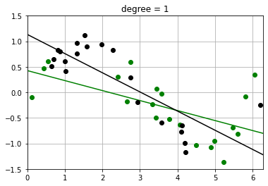
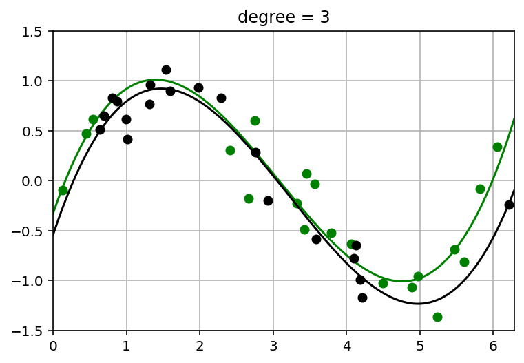
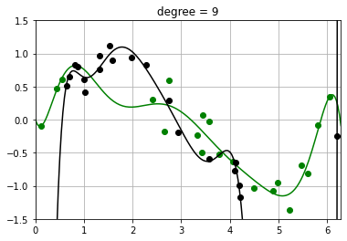
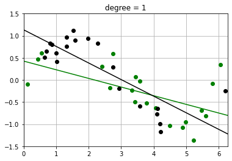
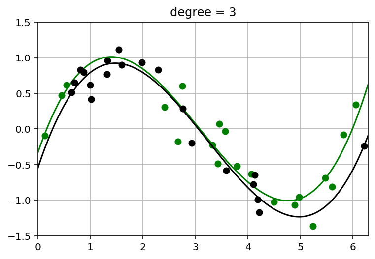
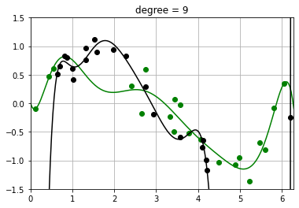

Bias-variance Decomposition
Contents
Bias-variance Decomposition¶
This is a supplement material for the Machine Learning Simplified book. It sheds light on Python implementations of the topics discussed while all detailed explanations can be found in the book.
I also assume you know Python syntax and how it works. If you don’t, I highly recommend you to take a break and get introduced to the language before going forward with my code.
This material can be downloaded as a Jupyter notebook (Download button in the upper-right corner ->
.ipynb) to reproduce the code and play around with it.
1. Required Libraries & Functions¶
import pandas as pd
import numpy as np
import warnings
import matplotlib.pyplot as plt
%config InlineBackend.figure_format = 'retina' # sharper plots
2. Synthetic Data¶
2.1. Define Synthetic Data and Target¶
Our synthetic problem defines:
\(f\) is the true function. \(f\) is usually not known, but for our synthetic example it is known and set to: $\( f(x) = \sin(x) \)$
\(\sigma_\epsilon\): the variance of the normally distributed observation noise \(N(0, \sigma_\epsilon)\). The observed value is equal to the so the observation is distributed as: $\( y(x) \sim f(x) + N(0, \sigma_\epsilon) \)$
\(p(x)\) is a probability distribution over the data points \(x\). Here it is a uniform distribution on the interval \([0, 2 \pi]\) $\( p(x) \sim \begin{cases} \frac{1}{2 \pi} & \text{if } x \in [0, 2 \pi] \\ % & is your "\tab"-like command (it's a tab alignment character) 0 & \text{otherwise.} \end{cases} \)$
x_min, x_max = 0, 2*np.pi # range of x variable
f = lambda x: np.sin(x) # true function
sigma_eps = 0.25 # random noise (irreducible)
N = 20 # training set size
def sample_x():
# Sample N data points uniformly distributed on interval [x_min, x_max]
return np.random.uniform(x_min, x_max, N)
def sample_xy():
x = sample_x()
y = f(x) + np.random.normal(0, sigma_eps, N)
return x, y
2.2. Plot two datasets¶
We draw a random sample of two datasets of size \(N\)
Plot them in different colors
todo: show the true function \(f\) along with it? Say “in the synthetic example, we know the true \(f\), which is the function we are trying to recover by learning from data”
np.random.seed(0)
def plt_new_fig(set_axes = True):
plt.figure()
if set_axes:
y_min, y_max = -1.5, 1.5 # data limits
# y_min, y_max = -0.5, 1.5 # data limits
plt.grid()
plt.xlim(x_min, x_max)
plt.ylim(y_min, y_max)
def plot_two_datasets(x1,y1, x2,y2):
'''Plot two datasets on the same axes and set appropriate limits.'''
plt_new_fig()
plt.plot(x1, y1, 'og', x2, y2, 'ok')
x1, y1 = sample_xy()
x2, y2 = sample_xy()
plot_two_datasets(x1,y1, x2,y2)
2.3. Fit polynomials of different degrees to two datasets¶
Note how the fit of the higher-order polynomial differs more (visually) from each other than the lower-order polynomial does.
This will visually help us understand the variance – how much the randomness in the dataset affects the learned function \(\hat{f}\). (More detailed calculation of variance to follow)
t = np.linspace(x_min, x_max, 200) # grid points - locations for plot and numeric integration
degrees_to_display = [0, 1, 3, 9]
warnings.filterwarnings("ignore") # ingore poorly conditioned warning in polyfit
def fit_and_evaluate_polynomial(x, y, degree, locs = t):
poly = np.poly1d(np.polyfit(x, y, degree)) # Fit polynomial to data using numpy package
ploc = poly(locs) # Evaluate polynomial at grid points
return np.clip(ploc, -10, 10) # for numerical stability
def fit_and_plot_two_datasets(x1,y1, x2,y2, degree):
fhat_1 = fit_and_evaluate_polynomial(x1, y1, degree)
fhat_2 = fit_and_evaluate_polynomial(x2, y2, degree)
plt_new_fig()
plt.plot(x1, y1, 'og', t, fhat_1, '-g',
x2, y2, 'ok', t, fhat_2, '-k')
plt.title(f'degree = {degree}')
for degree in degrees_to_display:
fit_and_plot_two_datasets(x1,y1, x2,y2, degree)
 





3. Variance Computation¶
We now compute the variance of the fits around the mean …… todo
def random_fits(degree, num_fits):
'''Generate random datasets and fit polynomial functions to data.'''
np.random.seed(0)
fits = np.zeros((num_fits, len(t)))
for i in range(num_fits):
x, y = sample_xy()
fits[i,:] = fit_and_evaluate_polynomial(x, y, degree)
return fits
def compute_E_fhat(degree, num_fits = 20000):
'''Approximate the average fit E[\hat{f}] by averaging over num_fits fits to random datasets.'''
fits = random_fits(degree, num_fits)
return fits.mean(axis = 0)
def compute_variance(degree, num_fits = 20000):
fits = random_fits(degree, num_fits)
variance_x = fits.var(axis = 0)
variance_total = variance_x.mean()
return variance_total
# evaluate E_fhat and variance for each polynomial degree
E_fhat = {degree: compute_E_fhat(degree) for degree in degrees_to_display}
variance = {degree: compute_variance(degree) for degree in degrees_to_display}
def plot_fits_Efhat(degree):
fits = random_fits(degree, num_fits = 100) # Smaller number of fits to speed up plotting
plt_new_fig()
plt.plot(t, fits.T, color = 'orange', alpha = 0.1);
plt.plot(t, E_fhat[degree], color = 'r', linewidth = 2, alpha = 1.0);
plt.title(f'degree = {degree}, variance = {variance[degree]:.4f}')
for degree in degrees_to_display:
plot_fits_Efhat(degree);
4. Bias Comptuation¶
The below plots show the expected fit \(E_{\mathcal{D}}[\hat{f}]\) against the true function \(f\).
We also compute the squared bias $\( E_x\; (f(x) - E[\hat{f}(x)])^2 \; = \; \int_{x=0}^{2 \pi}\; p(x)\; (f(x) - E[\hat{f}(x)])^2 \; = \; \int_{x=0}^{2 \pi}\; \frac{1}{2 \pi}\; (f(x) - E[\hat{f}(x)])^2 \; \approx \; \sum_{i=1}^{T}\; \frac{1}{|T|}\; (f(x^{(i)}) - E[\hat{f}(x^{(i)}])^2 \)\( where we break up the line \)[0, 2 \pi]\( into \)T\( uniformly spaced discrete values, \)x_1, \ldots, x_T$.
f_eval = f(t) # evaluate true function f at grid points
def compute_bias_sq(degree):
bias_sq_x = np.square(E_fhat[degree] - f_eval)
bias_sq = bias_sq_x.mean() # * t_integral_area
return bias_sq
bias_sq = {degree: compute_bias_sq(degree) for degree in degrees_to_display}
def plot_f_and_E_fhat(degree):
plt_new_fig()
plt.plot(t, E_fhat[degree], '-r', t, f_eval, '-b')
plt.legend(['E[\hat{f}]', 'f'])
plt.title(f'degree = {degree}, bias^2 = {bias_sq[degree]:.4f}')
for degree in degrees_to_display:
plot_f_and_E_fhat(degree)
5. Total EPE¶
We now compute the total expeected prediction error (EPE) for each degree polynomial.
# Put bias, variance, irreducible error into a dataframe for easy display
import pandas as pd
irreducible = {degree: np.square(sigma_eps) for degree in degrees_to_display}
df_EPE = pd.DataFrame({'Bias_Sq': bias_sq, 'Variance': variance, 'Irreducible': irreducible})
df_EPE.index.name = 'polynomial degree'
df_EPE['EPE'] = df_EPE.sum(axis = 1)
display(df_EPE)
df_EPE.plot(linestyle = '--', marker='o', figsize = (10, 6));
| Bias_Sq | Variance | Irreducible | EPE | |
|---|---|---|---|---|
| polynomial degree | ||||
| 0 | 0.497500 | 0.027638 | 0.0625 | 0.587638 |
| 1 | 0.200318 | 0.031793 | 0.0625 | 0.294611 |
| 3 | 0.004993 | 0.023503 | 0.0625 | 0.090996 |
| 9 | 0.000483 | 3.454109 | 0.0625 | 3.517092 |
6. Empirical Test Error¶
Previously we computed the theoretical EPE. The key question is:
Does the theoretical EPE match the emperical test error?
To compute the emperical test error, we draw a random train and test dataset, then perform the standard ML training and evaluation procedure:
Draw a training set of size N
Fit polynomials of each degree to the training data.
Draw a test set of size N
Evaluate the squared error of each fit on the test data.
np.random.seed(0)
x_train, y_train = sample_xy()
x_test, y_test = sample_xy()
plot_two_datasets(x_train, y_train, x_test, y_test)
plt.legend(['train', 'test']);
def fit_and_eval_test_error(degree, x_train, y_train, x_test, y_test):
y_pred = fit_and_evaluate_polynomial(x_train, y_train, degree,
locs = x_test)
mean_sq_err = np.square(y_pred - y_test).mean()
return mean_sq_err
test_error = {degree: fit_and_eval_test_error(degree, x_train, y_train, x_test, y_test)
for degree in degrees_to_display}
S = pd.Series(test_error, name = 'test error').to_frame()
S.index.name = 'polynomial degree'
We can see that the theoretical EPE and empirical test error agree reasonbly well.
pd.concat([df_EPE['EPE'], S], axis=1)
| EPE | test error | |
|---|---|---|
| polynomial degree | ||
| 0 | 0.587638 | 0.807306 |
| 1 | 0.294611 | 0.340867 |
| 3 | 0.090996 | 0.062224 |
| 9 | 3.517092 | 0.156872 |
However, the empirical error on a single dataset is obviously influenced by the random nature of the dataset. We now compute the emperircal error by averaging over many random train and test datasets. The emperirical error and theoretical EPE now agree very well.
def draw_sample_fit_and_eval_test_error_1(degree):
'''
1. Draw a random training and test set
2. Fit a polynomial of degree degree to the tranining data
3. Evaluate performance on test set
'''
x_train, y_train = sample_xy()
x_test, y_test = sample_xy()
return fit_and_eval_test_error(degree, x_train, y_train, x_test, y_test)
def draw_samples_fit_and_eval_test_error(degree, num_trials = 10000):
np.random.seed(0)
test_errors = [draw_sample_fit_and_eval_test_error_1(degree) for _ in range(num_trials)]
return np.mean(test_errors)
test_errors = {degree: draw_samples_fit_and_eval_test_error(degree)
for degree in degrees_to_display}
test_errors = pd.Series(test_errors, name = 'test error').to_frame()
test_errors.index.name = 'polynomial degree'
pd.concat([df_EPE['EPE'], test_errors], axis=1)
| EPE | test error | |
|---|---|---|
| polynomial degree | ||
| 0 | 0.587638 | 0.589134 |
| 1 | 0.294611 | 0.291031 |
| 3 | 0.090996 | 0.090609 |
| 9 | 3.517092 | 3.426393 |
7. Conclusion¶
In this notebook you learned how to:
Comptue the theoretical expected prediction error (EPE) using the bias-variance decomposition:
How to compute the average fit \(E[\hat{f}]\)
How to compute the bias of an estimator \(\hat{f}\) by comparing it to the known true function \(f\)
How to compute the variance of an estimator
Compare bias-variance over models of different complexity
Using the total EPE plots. Note how they agree well with the “ideal” bias-variance curves shown at the beginning of the chapter.
Theoretical EPE and emperical error agree
Compare the error predicted by EPE with emperical error using standard ML procedure (train and evaluate) on test data.